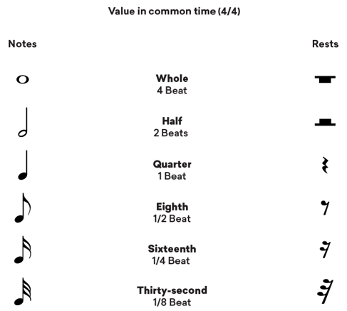
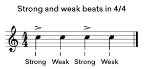
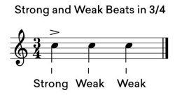

Pulsos y notas
Hay mucho material que estudiar a la hora de entender cómo leer ritmos musicales. Pero para poder sentir cualquier ritmo tienes que entender que una nota musical representa la duración de tiempo que el instrumento tocará. Una nota musical representa la duración de tiempo que el instrumento tocará. Una redonda representa la duración más larga, pero las redondas se pueden dividir en blancas, negras, corcheas y semicorcheas. Una blanca ocupa la mitad de la duración de una redonda; una negra ocupa un cuarto de la duración de una redonda y así sucesivamente.
Hay muchas formas en las que estas notas pueden cambiarse y organizarse para representar diferentes ritmos. Pero la base de cómo se entiende el ritmo visual y conceptualmente es saber cómo se subdividen las notas.
Pulsos fuertes y débiles
Dentro de un compás hay beats fuertes que dirigen el pulso y hay beats débiles que contrarrestan el pulso. Dentro de un compás hay beats fuertes que dirigen el pulso y hay beats débiles que contrarrestan el pulso. Este vaivén es lo que define un compás y hace que el ritmo sea fácil de escuchar. Si consideramos un compás de 4/4, los beats fuertes caen en la primera y la tercera negra y los débiles en la segunda y la cuarta negra.
En un compás de 3/4, el beat fuerte cae en la primera negra y los débiles en la segunda y la tercera.
Cuando sabes cómo suenan los beats fuertes y débiles en un compás musical, los puedes escuchar en todos lados.